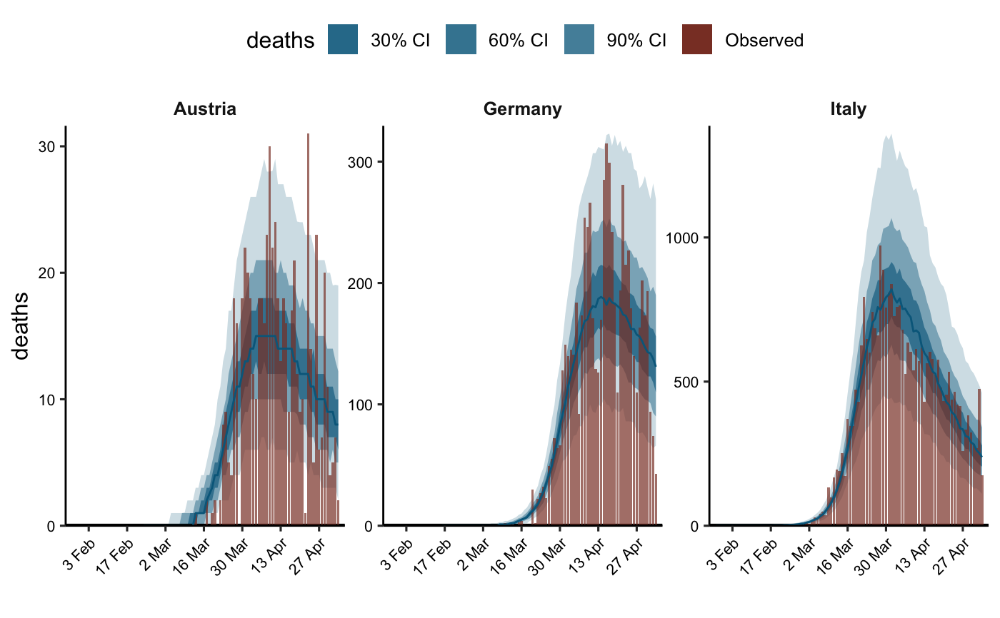
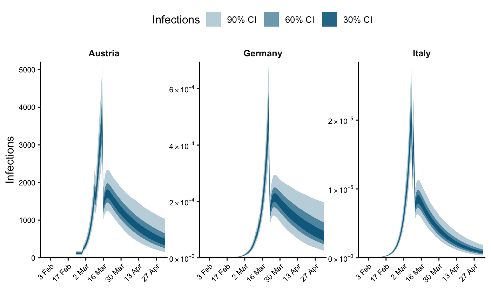

Plots posterior credible intervals and median for latent infections over time. The user can control the interval levels (i.e. 30%, 50% etc.) and the plotted group(s). This is a generic function.
plot_infections(object, ...) # S3 method for epimodel plot_infections( object, groups = NULL, dates = NULL, date_breaks = "2 weeks", date_format = "%Y-%m-%d", cumulative = FALSE, levels = c(30, 60, 90), log = FALSE, plotly = FALSE, ... )
Arguments
| object | A fitted model object returned by |
|---|---|
| ... | Additional arguments for |
| groups | Either |
| dates | A length 2 vector of |
| date_breaks | A string giving the distance between date tick labels.
Default is |
| date_format | This function attempts to coerce the |
| cumulative | If |
| levels | A numeric vector defining the levels of the plotted credible intervals. |
| log | If |
| plotly | If |
Value
If plotly = FALSE, a ggplot object which can be further modified. Otherwise
a plotly object.
See also
Examples
# \donttest{ data("EuropeCovid2") data <- EuropeCovid2$data data <- dplyr::filter(data, date > date[which(cumsum(deaths) > 10)[1] - 30]) data <- dplyr::filter(data, date < as.Date("2020-05-05")) rt <- epirt( formula = R(country, date) ~ 0 + (1 + public_events + schools_universities + self_isolating_if_ill + social_distancing_encouraged + lockdown || country) + public_events + schools_universities + self_isolating_if_ill + social_distancing_encouraged + lockdown, prior = shifted_gamma(shape=1/6, scale = 1, shift = log(1.05)/6), prior_covariance = rstanarm::decov(shape = c(2, rep(0.5, 5)),scale=0.25), link = scaled_logit(6.5) ) inf <- epiinf(gen = EuropeCovid$si, seed_days = 6) deaths <- epiobs( formula = deaths ~ 1, i2o = EuropeCovid2$inf2death, prior_intercept = rstanarm::normal(0,0.2), link = scaled_logit(0.02) ) args <- list(rt=rt, inf=inf, obs=deaths, data=data, seed=12345) args$group_subset <- c("Italy", "Austria", "Germany") args$algorithm <- "fullrank" args$iter <- 1e4 args$tol_rel_obj <- 1e-3 fm <- do.call(epim, args)#> Chain 1: ------------------------------------------------------------ #> Chain 1: EXPERIMENTAL ALGORITHM: #> Chain 1: This procedure has not been thoroughly tested and may be unstable #> Chain 1: or buggy. The interface is subject to change. #> Chain 1: ------------------------------------------------------------ #> Chain 1: #> Chain 1: #> Chain 1: #> Chain 1: Gradient evaluation took 0.000589 seconds #> Chain 1: 1000 transitions using 10 leapfrog steps per transition would take 5.89 seconds. #> Chain 1: Adjust your expectations accordingly! #> Chain 1: #> Chain 1: #> Chain 1: Begin eta adaptation. #> Chain 1: Iteration: 1 / 250 [ 0%] (Adaptation) #> Chain 1: Iteration: 50 / 250 [ 20%] (Adaptation) #> Chain 1: Iteration: 100 / 250 [ 40%] (Adaptation) #> Chain 1: Iteration: 150 / 250 [ 60%] (Adaptation) #> Chain 1: Iteration: 200 / 250 [ 80%] (Adaptation) #> Chain 1: Iteration: 250 / 250 [100%] (Adaptation) #> Chain 1: Success! Found best value [eta = 0.1]. #> Chain 1: #> Chain 1: Begin stochastic gradient ascent. #> Chain 1: iter ELBO delta_ELBO_mean delta_ELBO_med notes #> Chain 1: 100 -15498.854 1.000 1.000 #> Chain 1: 200 -7409.437 1.046 1.092 #> Chain 1: 300 -5098.258 0.848 1.000 #> Chain 1: 400 -4438.630 0.673 1.000 #> Chain 1: 500 -3563.464 0.588 0.453 #> Chain 1: 600 -2847.222 0.532 0.453 #> Chain 1: 700 -2828.410 0.457 0.252 #> Chain 1: 800 -2567.207 0.412 0.252 #> Chain 1: 900 -2615.583 0.369 0.246 #> Chain 1: 1000 -2316.989 0.345 0.246 #> Chain 1: 1100 -2025.114 0.259 0.149 #> Chain 1: 1200 -2050.223 0.151 0.144 #> Chain 1: 1300 -1897.996 0.114 0.129 #> Chain 1: 1400 -1897.654 0.099 0.102 #> Chain 1: 1500 -1703.371 0.086 0.102 #> Chain 1: 1600 -1524.389 0.072 0.102 #> Chain 1: 1700 -1593.692 0.076 0.102 #> Chain 1: 1800 -1382.811 0.081 0.114 #> Chain 1: 1900 -1356.087 0.081 0.114 #> Chain 1: 2000 -1287.613 0.074 0.080 #> Chain 1: 2100 -1242.744 0.063 0.053 #> Chain 1: 2200 -1298.518 0.066 0.053 #> Chain 1: 2300 -1158.171 0.070 0.053 #> Chain 1: 2400 -1148.673 0.071 0.053 #> Chain 1: 2500 -1112.960 0.063 0.043 #> Chain 1: 2600 -1063.253 0.056 0.043 #> Chain 1: 2700 -1037.914 0.054 0.043 #> Chain 1: 2800 -1062.149 0.041 0.036 #> Chain 1: 2900 -1025.294 0.042 0.036 #> Chain 1: 3000 -1028.503 0.037 0.036 #> Chain 1: 3100 -1008.079 0.036 0.032 #> Chain 1: 3200 -1003.260 0.032 0.024 #> Chain 1: 3300 -973.994 0.023 0.024 #> Chain 1: 3400 -998.511 0.024 0.025 #> Chain 1: 3500 -961.686 0.025 0.025 #> Chain 1: 3600 -973.330 0.022 0.024 #> Chain 1: 3700 -948.012 0.022 0.025 #> Chain 1: 3800 -957.482 0.021 0.025 #> Chain 1: 3900 -942.377 0.019 0.020 #> Chain 1: 4000 -957.282 0.020 0.020 #> Chain 1: 4100 -960.648 0.018 0.016 #> Chain 1: 4200 -950.738 0.019 0.016 #> Chain 1: 4300 -948.464 0.016 0.016 #> Chain 1: 4400 -954.030 0.014 0.012 #> Chain 1: 4500 -947.623 0.011 0.010 #> Chain 1: 4600 -939.038 0.011 0.010 #> Chain 1: 4700 -942.188 0.008 0.009 #> Chain 1: 4800 -936.880 0.008 0.007 #> Chain 1: 4900 -938.273 0.006 0.006 #> Chain 1: 5000 -933.556 0.005 0.006 #> Chain 1: 5100 -929.439 0.005 0.006 #> Chain 1: 5200 -929.740 0.004 0.005 #> Chain 1: 5300 -936.469 0.005 0.006 #> Chain 1: 5400 -934.142 0.005 0.005 #> Chain 1: 5500 -924.523 0.005 0.005 #> Chain 1: 5600 -929.735 0.005 0.005 #> Chain 1: 5700 -929.857 0.004 0.005 #> Chain 1: 5800 -919.809 0.005 0.005 #> Chain 1: 5900 -936.527 0.006 0.006 #> Chain 1: 6000 -993.485 0.012 0.007 #> Chain 1: 6100 -925.833 0.019 0.010 #> Chain 1: 6200 -921.205 0.019 0.010 #> Chain 1: 6300 -923.194 0.018 0.010 #> Chain 1: 6400 -928.790 0.019 0.010 #> Chain 1: 6500 -919.124 0.019 0.011 #> Chain 1: 6600 -921.084 0.019 0.011 #> Chain 1: 6700 -917.565 0.019 0.011 #> Chain 1: 6800 -921.111 0.018 0.006 #> Chain 1: 6900 -918.001 0.017 0.005 #> Chain 1: 7000 -913.075 0.012 0.005 #> Chain 1: 7100 -921.793 0.005 0.005 #> Chain 1: 7200 -927.539 0.005 0.005 #> Chain 1: 7300 -915.573 0.006 0.006 #> Chain 1: 7400 -914.450 0.006 0.005 #> Chain 1: 7500 -919.167 0.005 0.005 #> Chain 1: 7600 -920.140 0.005 0.005 #> Chain 1: 7700 -914.457 0.005 0.005 #> Chain 1: 7800 -915.387 0.005 0.005 #> Chain 1: 7900 -916.610 0.005 0.005 #> Chain 1: 8000 -911.921 0.005 0.005 #> Chain 1: 8100 -910.984 0.004 0.005 #> Chain 1: 8200 -915.187 0.004 0.005 #> Chain 1: 8300 -910.686 0.003 0.005 #> Chain 1: 8400 -917.383 0.004 0.005 #> Chain 1: 8500 -908.228 0.004 0.005 #> Chain 1: 8600 -914.883 0.005 0.005 #> Chain 1: 8700 -911.800 0.005 0.005 #> Chain 1: 8800 -910.920 0.005 0.005 #> Chain 1: 8900 -907.848 0.005 0.005 #> Chain 1: 9000 -914.024 0.005 0.005 #> Chain 1: 9100 -907.792 0.006 0.007 #> Chain 1: 9200 -908.857 0.005 0.007 #> Chain 1: 9300 -909.113 0.005 0.007 #> Chain 1: 9400 -907.337 0.004 0.003 #> Chain 1: 9500 -909.013 0.003 0.003 #> Chain 1: 9600 -909.910 0.003 0.002 #> Chain 1: 9700 -906.587 0.003 0.002 #> Chain 1: 9800 -905.629 0.003 0.002 #> Chain 1: 9900 -905.946 0.002 0.002 #> Chain 1: 10000 -908.949 0.002 0.002 #> Chain 1: Informational Message: The maximum number of iterations is reached! The algorithm may not have converged. #> Chain 1: This variational approximation is not guaranteed to be meaningful. #> Chain 1: #> Chain 1: Drawing a sample of size 1000 from the approximate posterior... #> Chain 1: COMPLETED.#> Warning: Pareto k diagnostic value is 2.4. Resampling is disabled. Decreasing tol_rel_obj may help if variational algorithm has terminated prematurely. Otherwise consider using sampling instead.plot_infections(fm)plot_infectious(fm)# }